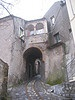
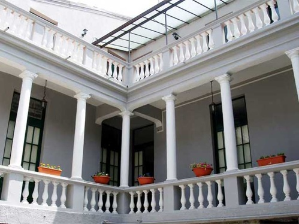
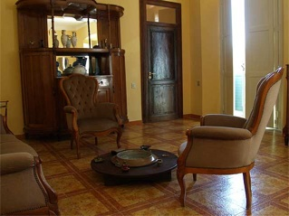
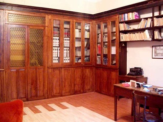
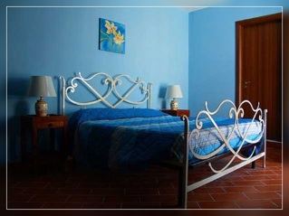
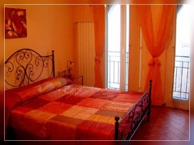
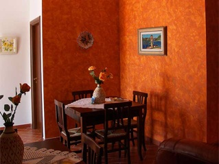
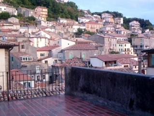

{% extends "base.html" %}
{% block title %}
{% endblock %}
{% block nav %}
Soffitta del BaroneSoffitta del Barone
{% endblock %}
{% block body %}
AVVISO
LA STRUTTURA E APERTA MA LA PAGINA E' IN VIA DI MIGLIORAMENTO, POTREBBE ESSERCI QUALCHE ERRORE NELLA DESCRIZIONE.

Dove Siamo
Siamo a Mormanno, i provincia di Cosenza, a 850 m. s.l.m., nel Parco Nazionale del Pollino.
Gode di un clima fresco ed asciutto, in posizione centrale per raggiungere le principali mete del Parco e facilmente raggiungibile con l'Autostrada A3.

In una mansarda di un palazzo del Settecento di recente restaurato, è ubicata "La Soffitta del Barone".

Lieti di ospitarvi Antonella ed Augusto, giovani padroni di casa, vogliono offrire un soggiorno rilassante e la possibilità di gustare a colazione, le bontà della gastronomia e della pasticceria locale.

Il nostro ospite, amante della montagna, potrà soggiornare in comode camere dotate di bagno e tv nell'accogliente sala da pranzo, mentre in estate potrà rilassarsi nella terrazza panoramica dove si può consumare la prima colazione con prodotti tipici locali e della casa. I ricercatori potranno consultare manoscritti, testi antichi e moderni nella biblioteca di famiglia.

La nostra struttura ha a disposizione 4 stanze per un totale di 12 posti letto.

Le camere sono luminose, confortevoli e arredate con gusto

La colazione vi sarà servita in un ambiente confortevole, gustando le marmellate e i dolci tipici della nostra terra

Il balcone per i vostri momenti di relax

Il Centro storico di Mormanno visto dalla nostra terrazza panoramica.
{% endblock %}
{% block right %}
Galleria Fotografica
FOTO
Informazioni e Prenotazioni
+39(0)98122916
+393477176208
+393281393771
+393893467176
TARIFFE DELLA SOFFITTA DEL BARONE
Camera matrimoniale
€ 60Camera singola
€ 40Camera 80 per la tripla
€ 80Camera Quadrupla
€ 100Tutti i prezzi sono comprensivi di Prima Colazione
PRENOTA IL TUO SOGGIORNO ALLA SOFFITTA DEL BARONE
Compilate il
Escursioni e visite guidate
Per chi ama la montagna o vuole visitare il Parco in generale, pressolareception, disporrà di documentazione e materiali informativi.
Chi vuole percorrere l’ampia rete di sentieri del Pollino potrà usufruire dei servizi di una
Guida Ufficiale del Parco
{% endblock %}